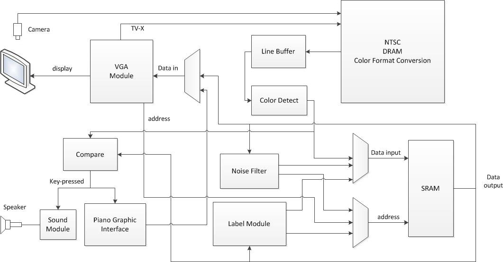
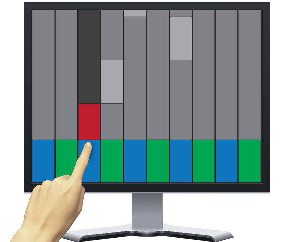

Introduction
Our project implements an interactive piano game and users could play virtual piano keyboard on the screen even though it’s not a touch screen.
By hooking up a camera above a monitor, with very simple calibration steps, your monitor is turned into a touch screen! Then, by hitting the virtual piano keys displayed on the screen, you will get the sound as playing a real piano. We provide two modes for users, one is practice mode, in which, users could feel free to play it as their will; the other mode is play mode, in which users would play songs following graphical instructions of which key to hit at a given time, and users would get a score for how well they played the song. Lots of configuration functions are provided, and user could choose hard level, number of keys and transposition, etc.
The whole system is as the following figure.
[top]
High level design
Rationale and sources of the project idea
The design idea is taken from the game “Synthesia Piano Hero”; refer to the_website for more details. Our design adopts the similar graphical interface as “Synthesia”, but with our virtual keyboard function, you could turn any monitor into a piano keyboard and play on it!
The model of the "Synthesia" is as the following figure.
[top]
Background math
Optical geometry
Optical geometry is as the following figure.
So as to make the screen work as a touch screen, we have to make sure that the system senses the key-hit only when the finger really touches the screen or is very close to the screen. The structure for setup is as the above figure.
When finger doesn't touch the screen, the camera could see the keys; when finger presses a certain key, the key pressed is shaded by the finger.
Karplus strong
The Karplus-Strong string synthesis Algorithm is widely used to simulate the real instrument sound produced by strings. It is a method of physical modeling synthesis that makes use of looping a short wave signal through a filtered delay processing to simulate the string sound. The algorithm first generates a series of random noise signal, which is then imported into a shift register and processed by a low pass filter. In this process, the signal will decay generally. The note will sound different with various filters and shift registers. The length of the shift registers determines the pitch of the note. And the gain value of the filter can also change the sound mode.
The following figure shows how Karplus strong algorithm works.
[top]
Logical structure
The whole system could be divided into two parts, the interface and the back end. The interface displays the graphical part through a monitor and perceives the screen display through a camera; it also has an audio interface to send the sound to speakers; it takes the users’ configuration and commands through toggle switches and keys. The back end part stores the song data and sends them to the display part; it detects the shape of the keyboard and stores them; it compares the video information from the interface with the stored keyboard to find if any key is pressed; it generates sound and sends feedback signal to graphical part; it tracks how well do users play the game and gives a final score.
The detailed system structure is as the following figure. More detailed information about the image capture part is in image capture.

[top]
Hardware/software tradeoffs
One major tradeoff for our project is that, instead of storing the image to display in SRAM, we just make a virtual buffer for VGA. It’s a module that takes the VGA address as input and calculates the corresponding color and sends out the result. The reason why we do so is because if the SRAM is dedicated to display, we then don’t have enough space to store data from image processing.
Another decision we have made is to use a single SRAM as several separate tables. Because, originally we need to store several tables to do the image processing: a ROI (region of interest) table to store the region of keyboard, a color table to store the color for each pixel in the ROI, a label table to store the label for each pixel in ROI, and a diff table to store the difference between the image from camera and the original image stored. Since that we cannot assign each table a separate RAM, we put them in a single SRAM; each pixel has 8-bits space, and different bits are account for different tables.
[top]
Hardware design
Image capture
The AD 7181B chip would take the NTSC signal and convert it to digital signal and extract the sync signal and a TD_CLK clock signal for further use. A TD_Detect block detects whether we are getting stable video signal and sends reset signal to initialize the rest of the system. Then, the ITU_656_decoder would decode the digital signal, convert it to YCbCr signal and send it to the four ports SDRAM module to store it in SDRAM. Two line buffers (for even lines and odd lines respectively) take in the data from the output port of the four ports SDRAM module and send synchronized YCbCr data according to the x coordination of current VGA address.
The structure for this part is as the following figure.
[top]
Color detection
The synchronized YCbCr data is then converted to RGB mode. Since we only want to know whether a pixel points to a green key or a blue key or neither, we need to extract the color information for each pixel. One way for doing this is to use a RGB to HSV function to get the hue, saturation and lightness value of the pixel, which is very exact in telling the color. The image retrieving is driven by the VGA clock, so the pixel value is on the fly. However, since the RGB to HSV algorithm comprises floating point number calculation, it usually takes several clock cycles to calculate for a single pixel, which means the processing speed cannot follow the retrieving speed. One way to solve this is to use a pipeline to do the color format conversion, through which even though the output has a few clock cycles lag to the input, the calculation still could follow the retrieving speed. Since we notice that the camera has an auto gain correction, which means that colors would always stay in a normal range, we develop a simplified color detection function which only outputs if the color is blue or green or neither. The function does a threshold for each of the R, G and B color channel and use the combination of the threshold to determine what color it is. Usually, the threshold should be adjusted according to the environment, but experience shows that with the help of the auto-gain of the camera, a threshold applies well for several of conditions if it is initially set in a normal condition and works well. The turth table for threshold funtion is as following.
| Red>Threshold | Green>Threshold | Blue>Threshold | Output |
|---|---|---|---|
| 0 | 0 | 0 | Neither |
| 0 | 0 | 1 | Blue |
| 0 | 1 | 0 | Green |
| 0 | 1 | 1 | Neither |
| 1 | 0 | 0 | Neither |
| 1 | 0 | 1 | Neither |
| 1 | 1 | 0 | Neither |
| 1 | 1 | 1 | Neither |
[top]
Noise Filter
In case that the image caption part or color detection part might generate random noise, which means some random pixels are regarded as blue or green when they are not, we apply a kind of median filter to get rid of noises. We traverse the whole image data in SRAM, and compare each single pixel’s color with its neighbors. If a pixel is different from both of its upper and lower neighbors or both of its left or right neighbor, it is regarded as noise and we erase it.
Another method we have tried is applying a median filter. However, since we can't update the whole image at once, this method doesn't work well.
[top]
Label
We assign each key a label, so later on when we compare the input image color with the stored color, we can know which key is pressed. Since the key colors are aligned in a way that blue and green show up alternately in horizontal direction, we sweep the image data column by column in sequence. Then we need to assign each connected color region a unique label. The traditional way of segmentation is done in a recursive way – region_growing_method. But we assume that two keys with the same color couldn’t exist in the same column, so we can regard pixels with same color in contiguous column are connected.
The algorithm is like this: while sweeping the frame column by column, find unlabeled color pixel, and label it with a label value. As long as next column has pixels with the same color, label them with the same value; if can’t find pixel with same color in next column, end this labeling process, increase the label value and start from the beginning again to find the next color, until the end of the frame. A double check is done by comparing the number of labels with the number of keys; if they don’t match, it means that at least one process failed and we should start from the first process again.
So as to implement the above algorithm, we should use a state machine to control the work flow, and we also need to keep track of: whether each pixel has been labeled or not, whether we are looking for the first pixel for a new label or are we keep labeling the current key, the current label number, whether we have reached the end of the frame. The whole precess could be generally devided into two parts: searching the first column for a key, searching the rest of the key.
The work flow is as the following figure.
While detecting key press, we let the VGA clock keep running and compare the incoming pixel color with the data stored in the SRAM, and we count the diff number for each label. Now that we only allow one key to make sound at a time, we regard the label with highest number of difference as the key pressed, if it exceeds a threshold at the same time.
[top]
Sound
In this system, we provide the user two kinds of sounds to synthesize the notes of the instrument. Firstly, we make use of the Karplus-Strong Algorithm to synthesize the sound of the piano hammer strike. Based on the Karplus-Strong algorithm which synthesizes the guitar pluck(code provided by ECE576_DSP_material), we improve the computation to simulate the hammer strike better. This is accomplished by low pass filtering of the input signal. We make use of a first-order low pass filter, and set the gain as 0.125. And we also improve the sound by simulating three strings per note, which is considered from a real piano. In the three strings for each note, we set the length of the shift register to be a little different from the two other strings. So, we have three M4K rams for each note. The output of the three strings’ sum is pretty good. We use some tune test applications on mobile device to test and adjust the frequency of each note from the speaker, and finally get 18 notes correspond to the note frequency tale.
Secondly, we also provide the sound synthesis using square wave with various frequencies. We use the 50MHz clock as the reference clock and it is easy to achieve the frequency computation. The sound is also very well. The advantage of this method is that we can cover more pitches and get wider frequencies for the notes. In fact, when we change to the 20 keys mode, we prefer to use the second kind of sound for the reason that if we still use the Karplus-Strong algorithm, some high frequency note will not sound good.
[top]
Speed, Melody and Score
A timer is used to control the tempo, measured in bps (beats per second). The melody retrieving and notes display are all driven by the beat clock. The melody is stored in memory, and shows up in the screen according to the current beat number. Users are graded for if they hit the right key at the right time. Each note is only counted once even though users might hit several times during the note period. Whether the user has hit the right note at the right time is determined by comparing the pressed key with the melody for current beat.
[top]
Display
The VGA user interface doesn’t take any memory; it is calculated on the fly. Since the image to display could be formulized, so whenever VGA requests a data to display, the display module calculates and returns the data according to the VGA address.
Practice mode is as the above figure. The lower row with blue and green blocks is used as keyboard. The column which is pressed would be shadowed.
Play mode is as the above figure. The lower area with blue and green blocks is used as keyboard area; the upper area is used to display notes that the user supposed to play. The note to be pressed is in bright gray. The note pressed at the right time is in red. If the user miss the note during the appropriate time, the note will not change into red. Also, the column which is pressed would be shadowed. In the play mode, if the user slide the pause/run switch, the notes will stay on the position where they are.
[top]
Interface
With the keys, switches, and seven-segments on the DE2 FPGA board, the user can achieve the settings of the system, change the number of keys, and chose different modes to play this piano hero game. We design the interface effectively and the user can accomplish several functions with the interface.
The KEY[0] is used to reset the camera and the display system, and KEY[1] is used to reset the sound system. Once the DE2 board is powered on and the devices are placed well, the user can push the reset buttons. Then the user can make use of the SW[0] to select which kinds of sound they would like to hear. Our default setting is the Karplus-Strong algorithm sound. And then the user can use SW[1] to change the display into the view of the camera. The monitor will show the user where the keys are and make sure the position of the keyboard mask. At this time, we can change SW[14], SW[15], SW[16] to determine the number of keys that we want. Note that we need to reset the system each time when we change the number of piano keys. In the next step, the user can slide the filter switches SW[2] and SW[3] two or three times. These two switches correspond to the filter function for the two different color piano keys, which will remove the noise pixels in the camera view for all piano keys. After the noise being removed, the user can slide the label switch SW[4], which will label the piano keys. And the seven-segments [6][7] will show the user how many piano keys are labeled after the labeling is finished. Since now, the system setting is accomplished, and then the user can chose the mode of the game. When we begin to play, the detect switch SW[5] should be turned on, and then the user’s finger can be detected.
If we want to use the practice mode, the switch SW[17] should be turned on, and the user can chose the start note using switches SW[7], SW[8], SW[9]. There are eight choices for the user, which are the seven notes in the scale and one high pitch G, and the seven-segment [6] will show the user’s choice. If we want to use the play mode, the mode switch SW[17] and the pause switch SW[6] should be turned down. We can set the tempo of the music score by switches SW[10]-SW[13], which will also be showed on the bps seven-segment. Then we can press KEY[2] to start the music score. If the user want to stop in the middle of the game, then the SW[6] switch can be used. After one music score is finished, the score will be displayed on the seven-segments. And the user can restart the game using KEY[2].
[top]
Results of the design
The system has the following functions. It could display a piano keyboard for users to hit keys; it should be able to sense which key is pressed by the user; it should give a visual feedback and sound whenever a key is pressed; it could display build-in song to instruct users to play; it could grade users’ performance by how well they play the build-in song.
The user interface during playing is as the following figure.
Sample songs played using this system:
Video is available in the parent page, right next to the title of this page.
[top]
Conclusion
Our design is an entertainment tool which could be used by anyone who is interested in music playing but don’t have a piano keyboard. Our design could help users to turn their monitor into a touch screen and play interactively. In the play mode, the system will help the user to improve their playing skills. We can add more music scores into the system and the users can choose the music score they like. You will enjoy playing it!
[top]
Reference
Video Realtime Cartoonifier
Altera University Program
Altera DE2 User Manual
Elementary Digital Waveguide Models for Vibrating Strings
The coupled motion of piano strings
KSD Piano Project
[top]
Appendix
Code
The zip file of the commented source code can be found here.
The top level module is in DE2_TV.v
[top]
Acknowledgements
We would specially thank Bruce Land and TA Annie Dai (wd65) for their astute advice and guidance during this project and the whole semester. It was a fun and interesting semester in our graduate study. Thanks for the help!
[top]
Work Split
Chonggang Li: Display design and vision processing.
Ran Hu: Sound Synthesis
Design and test are done together by team members.